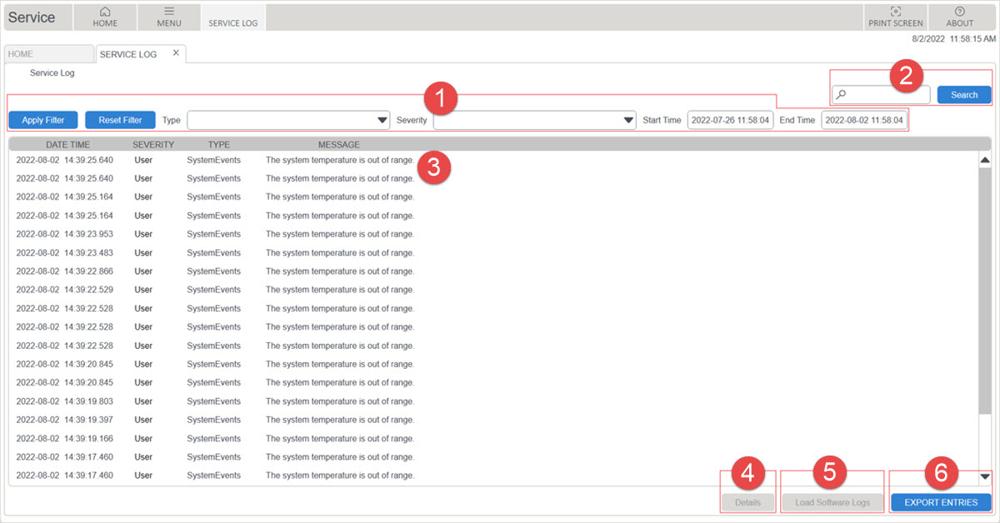
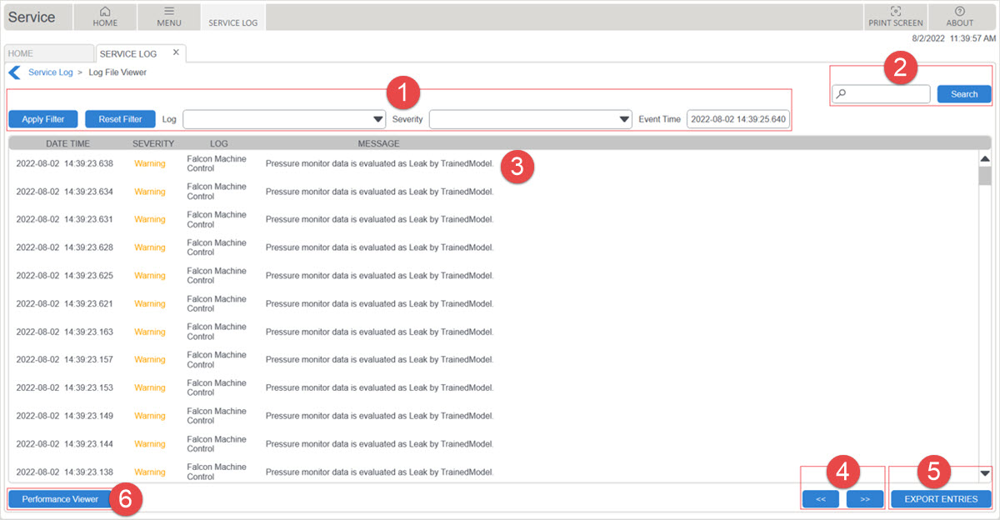

Viewing and Exporting Service Logs Using the Service App
This topic includes information about how to use the Service App to view and export service logs.
| Table of Contents |
|---|
| Service Log Page |
| Filters |
| Search |
| Event Grid |
| Details |
| Load Software Logs |
| Export Entries |
Service Log Page
In the Service App go to .

| Service Log Page Feature | Description | |
|---|---|---|
| 1 | Filters | Filter list by event type, severity, or date range |
| 2 | Search | Search for text within the filtered events |
| 3 | Event grid | Displays the list of events |
| 4 | Details | View details for a selected event |
| 5 | Load Software Logs | Opens Log File Viewer page |
| 6 | Export Entries | Exports events or logs to file for offline analysis |
Filters
| Filter | Description |
|---|---|
| Type | SystemEvent, SampleEvent, CalibrationEvent, or any combination of these event types. |
| Severity | Info, User, Warning, Error, Critical, ParseError, or any combination of these severities. |
| Date Range | Range between Start Time and End Time in UTC. |
Search
Type in the adjacent box and select Search to search the text in the Message column for events that have already been retrieved. The results will be shown in the event grid. This will not initiate a new request like the filter area does.
Event Grid
The event grid displays the events that have been retrieved. When the page initially loads, the events will be automatically retrieved based on the default filters.
- Date and Time
- Severity
- Type
- Message
Note: Due to a bug in the system software as of version 1.13, some events in the Service Log may show up as null. You can view these events by exporting log files using the Service App. See Exporting Log Files Using the Service App for more information.
Details
Select an event and select Details to view more details about the event.
Load Software Logs

| Log File Viewer Page Feature | Description | |
|---|---|---|
| 1 | Filters | Log folder, severity, event time |
| 2 | Search | Search for text within the filtered events |
| 3 | Log grid | List of logs |
| 4 | Paging buttons | The log grid displays a single log file at a time, based on the Event Time displayed. When you use a paging button, the Event Time will display to the earliest date contained in the new log that you paged to.
Tip: This page loads an entire day's files at once. The paging buttons will move to the next or to the previous log file within the same day. When the log file date changes, the view will start over at the beginning of the new date. When paging to the previous day, note that the first file of that day will be shown, not the last. Because of this, you may need to page forward a different number of times to get the original file than it takes to go backward.
Note: The paging buttons will be enabled only when you use the filter to select a single folder. If you select multiple folders, the paging buttons will be disabled.
|
| 5 | Export Entries | Exports logs files for offline analysis |
| 6 | Performance Viewer |
Opens the Performance Viewer page Note: This page displays performance details for the time frame of the selected log file. If the file does not contain any performance data (because it is not a Machine Control log), the notification
No performance data found in the selected file will be displayed and the page will display no data.
Note: Performance Viewer will be enabled only when you use the filter to select a single folder. If you select multiple folders,
Performance Viewer will be disabled.
|
Export Entries
Select Export Entries to export the filtered events or logs to a file. You will be prompted to select the location for saving the file.